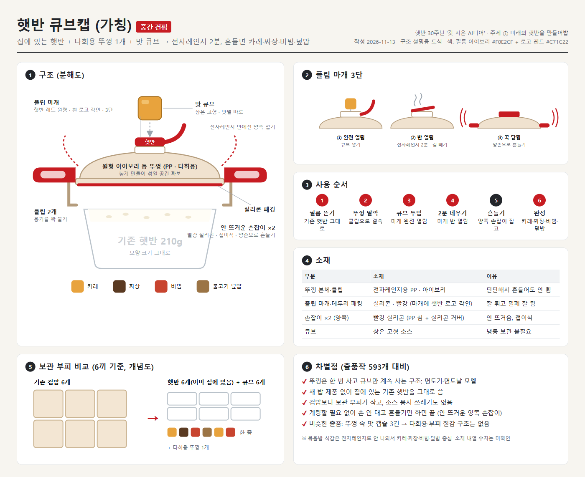

오늘 저녁,
뭐 먹지?
오늘 저녁 뭐 먹을까?
카레 어때?
난 짜장 먹고 싶은데!
그럼 컵밥 종류별로 사 둘까?
밥은 이미
집에 있잖아요.
필요한 건
맛 한 알이니까
그런데, 잠깐…
그냥 소스 부으면 되지 않나요?
뚜껑을 또 사야 해요?
뚜껑은 한 번, 양념만 바꾸면 끝
1
계량할 필요 없이
한 알 톡
2
손 안 대고
양쪽 손잡이로 흔들기
3
컵밥보다
훨씬 작은 보관 부피
오늘 저녁은,
흔들어서 정할게요
제작 과정
① 아이디어 정리 → ② 구조 보드 제작 → ③ GPT로 이미지 생성

햇반 30주년 '갓 지은 AI디어' 공모전 출품작 · AI로 제작한 가상의 제품 콘셉트입니다